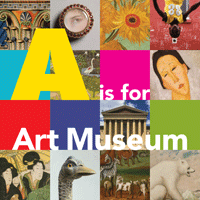

<body bgcolor="#FFFFFF" text="#000000" link="#0000FF" vlink="#CC0000" alink="#CC0000"><center><hr width="350" size="1" align="center" noshade>From the Philadelphia Museum of Art, a fun-filled primer for children and grown-ups to share<hr width="350" size="1" align="center" noshade><p><a href="https://cdcshoppingcart.uchicago.edu/Cart/ChicagoBook.aspx?ISBN=9781592139637&&PRESS=temple" target="_top">Buy this book!</a> | <a href="https://cdcshoppingcart.uchicago.edu/Cart/Cart.aspx?PRESS=temple" target="_top">View Cart</a> | <a href="https://cdcshoppingcart.uchicago.edu/Cart/Cart.aspx?PRESS=temple" target="_top">Check Out</a></p><p></p></center><!--none//--><h1>A is for Art Museum</h1>
<h3>Katy Friedland and Marla K. Shoemaker</h3>
<P>cloth 1-59213-963-9 $18.95, Sep 08, <FONT COLOR=#990033>Available</FONT>
<BR> 64 pp
8.25x8.25
145&nbsp;tables 37&nbsp;color&nbsp;illustrations
</P><h3 align="center"><P><font color="#996633">Honorable mention in the AAM (American Association of Museums) design competition.,
2008</font></P>
</H3>
<P>An art museum is a magical place. What will you find inside? This playful primer features 37 full-color illustrations of paintings, sculpture, tapestries, prints, photographs, and installations from the collections of the Philadelphia Museum of Art. Children can learn their ABCs while discovering the beauty of a bridge by Monet, a dancer by Degas, a medieval knight�s helmet, a Japanese teahouse, and other wonders from around the world.</P>
<P>In <i>A is for Art Museum</i>, children are encouraged to see art in new ways. Each image is accompanied by questions designed to engage their imaginations and spark lively conversations. Activities at the back of the book suggest ways for children and adults to create stories out of each picture, or to turn a trip to an art museum into a �treasure hunt.� Like a visit to a museum, <i>A is for Art Museum</i> provides endless opportunities for interaction, fun, and learning.</P>
<p>Recommended for ages 2-5.</P>
<P>Published in association with the Philadelphia Museum of Art.</P>
<BR>&nbsp;<h2>Reviews</h2>
<p><i>"Coffee-table books aren�t just for grown-ups, as proven by </i>A Is for Art Museum<i>, a kid-sized catalog that brings children into the Philadelphia Museum of Art through pictures and the alphabet. Every letter is tied to a piece in the museum, and asks readers a question about the photo�. It�s the perfect museum companion, too, for a first trip."</i> <br>&#151<b><i>The Philadelphia Inquirer</i></b>
<p><i>"Ages 2 to 5 will learn about art, shapes, colors and more through paintings and other objects found at the Philadelphia Art Museum. Famous artists have their works included in an educational format, showing children that different visions of the world are still accessible. Each page asks questions and helps develop the child�s thinking process as they search for letters, images and more. Truly a wonderful addition to any child�s library."</i>
<br>&#151<b><i>Parents Express</i></b>
<p><i>"A highly engaging introduction to art, this thoughtfully designed volume will inspire young children to see not only the alphabet in an entirely new way but also the world around them as they discover and learn to view paintings, sculptures, photographs, and other works and installations housed at the Philadelphia Museum of Art.... This would be a wonderful gift for any young child."</i> <br>&#151<b><i>The Bloomsbury Review</i></b>
<BR>&nbsp;<H2>About the Author(s)</H2>
<P><b>Katy Friedland</b> is Manager of Family and Children's Programs at the Philadelphia Museum of Art.</P>
<P><b>Marla K. Shoemaker</b> is Senior Curator of Education at the Philadelphia Museum of Art.</P>
<BR><H2>Subject Categories</H2>
<p><A HREF="/tempress/general.html" TARGET="_top">General Interest</a>
<BR><A HREF="/tempress/philly.html" TARGET="_top">Philadelphia Region</a>
<BR><A HREF="/tempress/education.html" TARGET="_top">Education</a>
</p>
<p align="center"><a href="https://cdcshoppingcart.uchicago.edu/Cart/ChicagoBook.aspx?ISBN=9781592139637&&PRESS=temple" target="_top">Buy this book!</a> | <a href="https://cdcshoppingcart.uchicago.edu/Cart/Cart.aspx?PRESS=temple" target="_top">View Cart</a> | <a href="https://cdcshoppingcart.uchicago.edu/Cart/Cart.aspx?PRESS=temple" target="_top">Check Out</a></p><p><font face="Arial" size="1"><a href="copyright.html" onMouseOver="window.status='Web Copyright Policy';return true;" onMouseOut="window.status=''" title="Web Copyright Policy">&copy;</a> 2015 <a href="http://www.temple.edu" target="new" onMouseOver="window.status='Link to Temple University home page';return true;" onMouseOut="window.status=''" title="Link to Temple University home page">Temple University</a>. All Rights Reserved. http://www.temple.edu/tempress/titles/2015_reg.html</font></p>